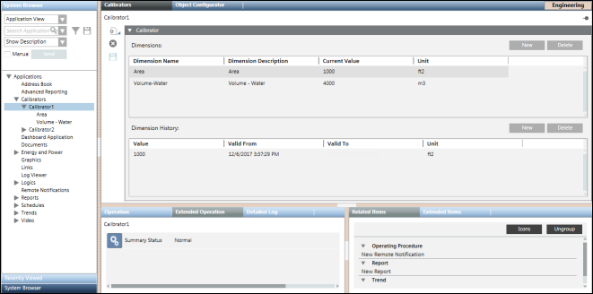

Virtual Devices and Building Data
This section provides background information on Virtual Devices and Building Data of Desigo CC. For related procedures, see the step-by-step section.
Calibrators are container objects that have one or more dimensions, such as area, volume, number of occupants, and so on configured. With the help of dimension objects, you can configure the properties of the aggregator objects, such as campus, building, floor, room, and so on. Additionally, you can specify the history information for changes in the dimension values over a period of time.
These calibrator objects or dimensions can be linked to aggregator nodes in views. The historical dimension values are used to calculate energy performance in energy reports.
In order to work with calibrators, you must install the Virtual Devices and Building Data extension and add it to a management platform project.

The Calibrator expander contains the Dimensions and Dimension History sections that allow you configure dimensions.
- Dimension Name: The name of the dimension, for example, Area, Volume.
- Dimension Description: Description of the dimension.
- Current Value: Current Value of the selected dimension.
- Unit: Unit of measurement of the selected dimension. You can select the unit of measurement from the drop-down list that displays when clicking the cell entry below the Unit column. Alternatively, you can also search for a unit by typing its name in the textbox and selecting the appropriate unit from the list.
- New: Adds a new row to the dimension table when adding a new dimension.
- Delete: Removes an existing dimension entry from the dimensions table.
The Dimension History section lets you configure the following elements:
- Value: Value of the selected dimension.
- Valid From: Date/Time from when the value of the dimension is applicable.
- Valid To: Date/Time till when the dimension value is applicable.
- Unit: Displays the unit of measurement of the selected dimension.
- New: Adds a new historical record to the dimension history.
- Delete: Removes an existing record from the dimension history.
Calibrators Toolbar
The following toolbar icons allow you to work with calibrator objects.
Item | Name | Description |
| New | Allows you to create a new calibrator object or a new folder below which you can group related calibrator objects. The new folder is created below the Calibrators node in System Browser. |
| Delete | Deletes a calibrator object or a folder below the Calibrators node in System Browser. |
| Save | Saves the information of a calibrator object. |